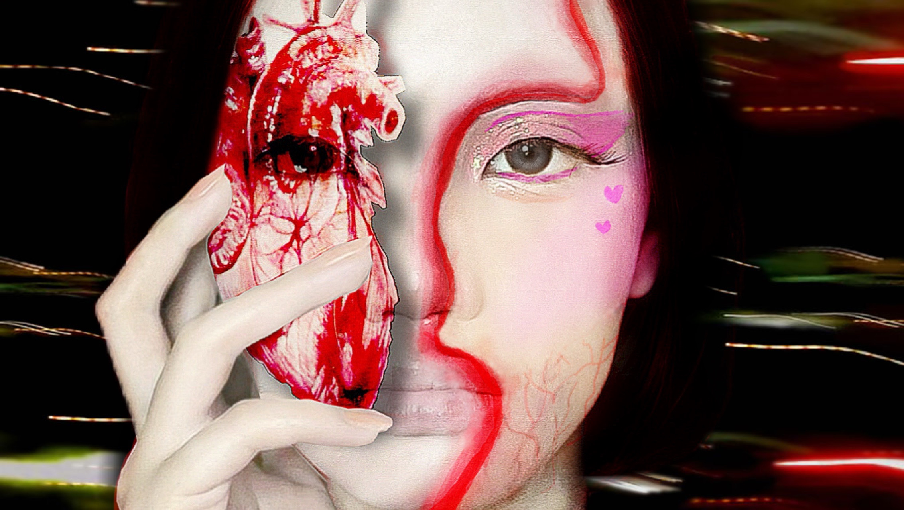
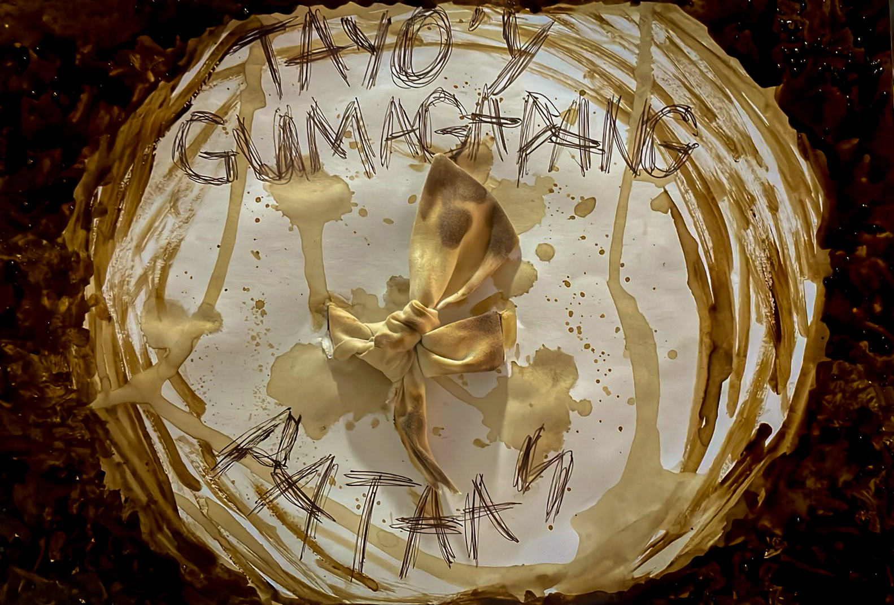

Hi! I’m Allyza Mae V. Baculao, a 19-year-old first-year Multimedia Arts student with a passion for creativity and visual storytelling. As an aspiring graphic designer, I enjoy exploring different styles of design and turning ideas into meaningful and eye-catching visuals. I’m continuously learning and improving my skills in digital art, branding, and multimedia design while pursuing my dream of becoming a successful designer in the creative industry. Hi! I’m Allyza Mae V. Baculao, a 19-year-old first-year Multimedia Arts student with a passion for creativity and visual storytelling. As an aspiring graphic designer, I enjoy exploring different styles of design and turning ideas into meaningful and eye-catching visuals. I’m continuously learning and improving my skills in digital art, branding, and multimedia design while pursuing my dream of becoming a successful designer in the creative industry.

